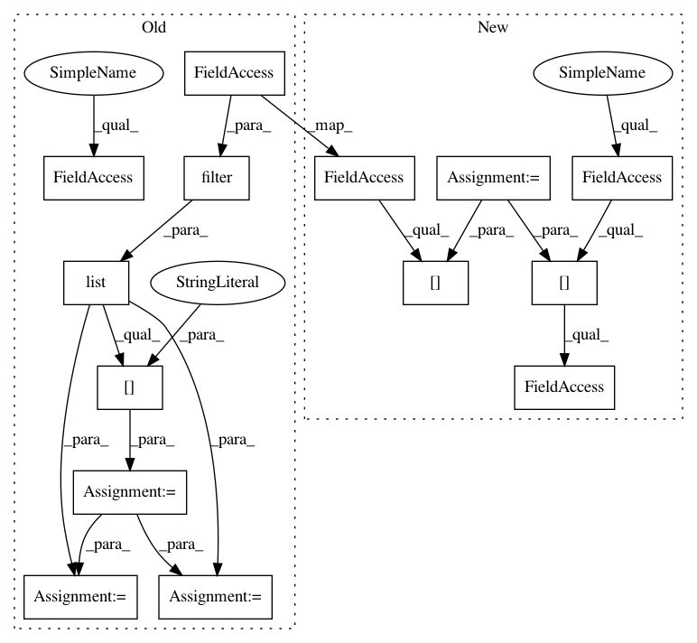

b048efa4f956b80266942caea6ee8b4311e1d17a,autokeras/net_transformer.py,,to_skip_connection_graph,#Any#,57
Before Change
The skip_connected model
// The last conv layer cannot be widen since wider operator cannot be done over the two sides of flatten.
weighted_layers = list(filter(lambda x: is_conv_layer(x), graph.layer_list))[:-1]
index_a = randint(0, len(weighted_layers) - 1)
index_b = randint(0, len(weighted_layers) - 1)
if index_a == index_b:
if index_b == 0:
index_a = index_b + 1
else:
index_a = index_b - 1
if index_a > index_b:
index_a, index_b = index_b, index_a
a = weighted_layers[index_a]
b = weighted_layers[index_b]
a_id = graph.layer_to_id[a]
b_id = graph.layer_to_id[b]
if a.output_shape[-1] != b.output_shape[-1]:
graph.to_concat_skip_model(a_id, b_id)
elif random() < 0.5:
graph.to_add_skip_model(a_id, b_id)
After Change
The skip_connected model
// The last conv layer cannot be widen since wider operator cannot be done over the two sides of flatten.
weighted_layer_ids = graph.skip_connection_layer_ids()
index_a = randint(0, len(weighted_layer_ids) - 1)
index_b = randint(0, len(weighted_layer_ids) - 1)
if index_a == index_b:
if index_b == 0:
index_a = index_b + 1
else:
index_a = index_b - 1
if index_a > index_b:
index_a, index_b = index_b, index_a
a_id = weighted_layer_ids[index_a]
b_id = weighted_layer_ids[index_b]
if graph.layer_list[a_id].output_shape[-1] != graph.layer_list[b_id].output_shape[-1]:
graph.to_concat_skip_model(a_id, b_id)
elif random() < 0.5:
graph.to_add_skip_model(a_id, b_id)
In pattern: SUPERPATTERN
Frequency: 4
Non-data size: 14
Instances
Project Name: keras-team/autokeras
Commit Name: b048efa4f956b80266942caea6ee8b4311e1d17a
Time: 2018-04-08
Author: jin@tamu.edu
File Name: autokeras/net_transformer.py
Class Name:
Method Name: to_skip_connection_graph
Project Name: keras-team/autokeras
Commit Name: b048efa4f956b80266942caea6ee8b4311e1d17a
Time: 2018-04-08
Author: jin@tamu.edu
File Name: autokeras/net_transformer.py
Class Name:
Method Name: to_wider_graph